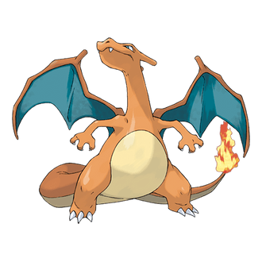
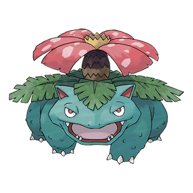
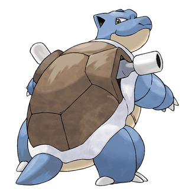

-
Charizard
Descrição
Charizard é um Pokémon bípede draconiano. É principalmente laranja com um creme na parte inferior do peito até a ponta da cauda. Tem um pescoço longo, pequenos olhos azuis, narinas levemente elevadas e duas estruturas semelhantes a chifres que se projetam da parte de trás de sua cabeça retangular. Há duas presas visíveis em sua mandíbula superior quando sua boca está fechada. Duas grandes asas com a parte inferior azul-esverdeada brotam de suas costas, e um apêndice semelhante a um chifre se projeta do topo da terceira articulação de cada asa. Um único dedo da asa é visível através do centro de cada membrana da asa. Os braços de Charizard são curtos e magros em comparação com sua barriga robusta, e cada membro tem três garras brancas. Tem pernas encorpadas com solas de cor creme em cada um de seus pés plantígrados. A ponta de sua cauda longa e afinada queima com uma chama considerável, que pode se intensificar para uma chama azul se Charizard estiver irritado.
-
Venusaur
Descrição
Venusaur é um Pokémon anfíbio quadrúpede com pele esburacada e azul-esverdeada. Tem olhos vermelhos pequenos e circulares e um focinho curto e rombo. Sua boca é larga com dois dentes pontiagudos na mandíbula superior e quatro na mandíbula inferior. No topo de sua cabeça estão pequenas orelhas pontiagudas com interior rosa-avermelhado. Tem três dedos em garra em cada pé. O botão em suas costas floresceu em uma grande flor rosa, de manchas brancas. A flor é sustentada por um tronco espesso e marrom cercado por frondes verdes. Uma fêmea Venusaur tem um gineceu no centro de sua flor. Venusaur usa sua flor para captar os raios solares para convertê-los em energia, o que faz com que a flor se torne mais vibrante. A flor libera um aroma calmante que atrai Pokémon e acalma as emoções. Este cheiro torna-se mais forte após um dia chuvoso. Venusaur é mais forte no verão, quando há muito mais luz solar para absorver. Como mostrado em Pokémon Sleep, Venusaur libera uma fragrância calmante enquanto dorme. [1] No anime, Venusaur demonstrou a capacidade de manipular a natureza, liberar várias videiras de suas costas e liderar cerimônias de evolução para Bulbasaur e Ivysaur. Este Pokémon raramente é encontrado na natureza, mas sabe-se que habita pastagens.
-
Blastoise
Descrição
Blastoise é um grande Pokémon de tartaruga bípede. Seu corpo é azul e é principalmente escondido por sua casca dura e marrom. Esta concha tem uma parte inferior de cor creme e uma crista branca que circunda seus braços e separa as metades superior e inferior. Dois potentes canhões de água/bicos de jato residem no topo de sua concha sobre seus ombros. Estes canhões podem ser estendidos ou retirados. A cabeça de Blastoise tem orelhas triangulares que são pretas por dentro, pequenos olhos castanhos e uma mandíbula inferior de cor creme. Seus braços são grossos, e tem três garras em cada mão. Seus pés têm três garras na frente e uma nas costas. Saindo do fundo de sua concha está uma cauda de tesão. Os poderosos canhões nas costas deste Pokémon são capazes de produzir explosões de água que podem perfurar aço e concreto e podem ser usados para cargas de alta velocidade. A velocidade das cargas de Blastoise é semelhante à força de um foguete. Blastoise deliberadamente se torna pesada para resistir a essas poderosas explosões e esmagar seus oponentes. É mostrado no episódio da série Pokémon Beach Blank-Out Blastoise que Blastoise pode assumir o papel de um líder em grandes grupos de Squirtle e Wartortle. Seu habitat preferido parece ser lagoas e lagos de água doce. Como mostrado em Pokémon Sleep, Blastoise é conhecido por dormir profundamente enquanto protegido por sua casca resistente. [1] A blastoise também foi vista dormindo com a barriga exposta em raríssimas ocasiões. Isto devido a Blastoise sentir-se completamente seguro em seus arredores e rapidamente adormecer.